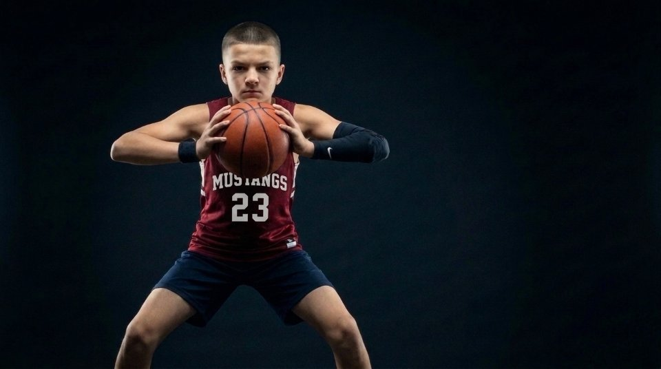

Securing the Rebound: Attack, Chin & Protect
Isolated slow-motion video breakdown and 5-step progression for snatching the ball at its peak, chinning it with elbows wide, and sweeping away from traffic.
Slow-mo video + 5 stepsOpen lesson →